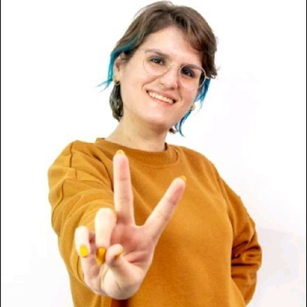
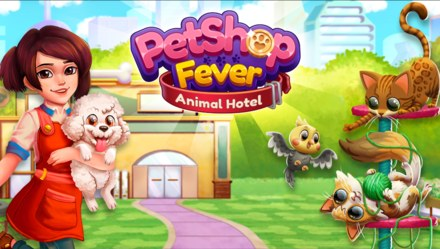
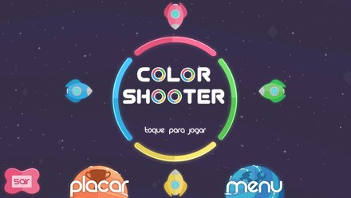
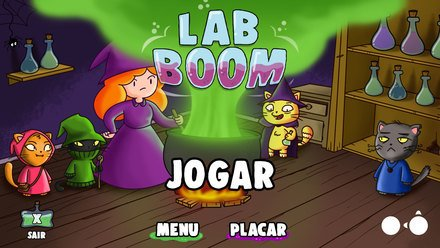
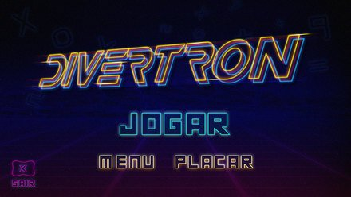

Eu projeto as mecânicas e os sistemas que dão a um jogo a experiência emocional que ele pretende ter.

Blumenau, BrasilOs jogos sempre fizeram parte da minha vida – eles me marcaram, me inspiraram e, de certa forma, moldaram quem eu sou. Hoje, meu objetivo é criar experiências que causem o mesmo impacto em outras pessoas.
Trabalho criando experiências de gameplay envolventes, sistemas de monetização equilibrados e Live Ops que mantêm os jogadores engajados a longo prazo. Acredito que criatividade e estratégia devem andar juntas, para que cada decisão de design tenha propósito e impacto.
Ao longo da minha carreira, tive a oportunidade de contribuir para o design e o crescimento de vários títulos e de aprender com cada desafio que enfrentei. Quero continuar aprimorando minhas habilidades, alcançar novos marcos e colaborar com a indústria.
Mais de 10 anos de experiência
Os jogos em que trabalhei
Pet Shop Fever
Um jogo de time management em operação sobre administrar e expandir uma rede de pet shops temáticos, com mais de 2.000 fases e 1M+ de downloads no Google Play.

Evolution Galaxy: Mutant Merge
Um jogo de merge e idle free-to-play que leva a série de evolução para o espaço, com 1M+ de downloads.

Vlogger Go Viral
Um simulador idle free-to-play sobre construir uma carreira no YouTube, com 50M+ de downloads.

My Boo
Um jogo de pet virtual de longa duração sobre cuidados diários, personalização e minigames, com 500K+ de downloads.

Liga do Tempo
Um jogo de cartas de história, para crianças a partir de 9 anos, em que até quatro viajantes do tempo consertam uma linha do tempo bagunçada ordenando fatos históricos, jogando uns contra os outros ou contra a máquina, ou cooperando em duplas.

Color Shooter
Um jogo cooperativo de motricidade fina para jogadores a partir de 4 anos, em que cada um comanda uma nave que só acerta os alvos da sua própria cor.

Lab Boom
Um jogo de tabuleiro inspirado em damas para jogadores a partir de 7 anos, em que até quatro gatos ajudantes de uma bruxa posicionam poções mágicas no tabuleiro, em cinco modos que exercitam raciocínio, memória, sorte e trabalho em equipe.

Divertron
Uma coleção de jogos de tabuleiro clássicos em versões digitais (Damas, Reversi, Jogo da Velha e Ludo) para jogadores a partir de 5 anos, com diferentes níveis de dificuldade contra a máquina.

Guardiões do Mundo
Um jogo de cartas para jogadores a partir de 9 anos, em que personagens do folclore brasileiro disputam o controle de um tabuleiro com cartas de estados brasileiros. Projetei o modo desafio: 20 partidas rápidas contra a IA, cada vez mais difíceis.
Experiência
Game Designer
Projeto mecânicas, tutoriais, features e narrativa para jogos F2P em operação nos gêneros idle, merge, time management e pet virtual. Trabalho direto na engine, em Unity; prototipo e apresento novos conceitos de jogo em sprints e game jams; conduzo playtests; e cuido dos sistemas de economia e progressão. A/B testing e benchmarks de mercado validam as decisões de design.
Game Designer
Mecânicas centrais e level design para jogos mobile hypercasual; especificações técnicas e suporte na engine para o time de desenvolvimento durante a implementação.
Game Designer e Ilustradora
Trabalhos de game design em paralelo à ilustração de livros infantis publicados.
Game Designer
Mais de dez jogos educacionais levados do conceito ao lançamento em uma plataforma proprietária para tablets: Mecânicas, level design, balanceamento de dificuldade e playtests com o público-alvo. Design centrado no jogador e iterativo do início ao fim.